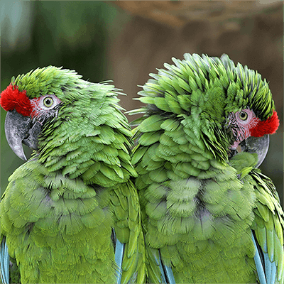

ARA MILITAIRE
Le Ara Militaire a le plumage vert clair sur la tête et vert olive sur le cou, le dos et les ailes tandis que son front est rouge. C’est le premier perroquet connu en Europe car, déjà pendant l’invasion du Mexique, il a été décrit comme oiseau ayant une grande valeur pour les Incas.
MODE DE VIE :
L’Ara militaire vit généralement en couple fidèle, mais peut se déplacer en groupes d’une vingtaine d’individus dans la recherche de la nourriture. Les couples passent beaucoup de temps à se toiletter, renforçant ainsi leurs liens conjugaux. Ils aiment également se percher aux sommets des arbres et s’envoler en criant bruyamment au moindre dérangement. A la différence des autres Aras, la répartition géographique de l’Ara militaire est discontinue, ce qui a permis la formation de trois sous-espèces. Au ZOO, nous hébergeons une sous-espèce provenant du Mexique (A. m. mexicana).
CONSERVATION :
Menaces : Son habitat est menacé à cause de la déforestation incessante. Les jeunes sont également capturés pour devenir des oiseaux de compagnie.
Statut de protection : Convention de Washington, Annexe I A (CITES)
Statut UICN : Vulnérable (VU).
LE SAVIEZ-VOUS ?
Les paléontologues n’ont pas trouvé de traces fossilisées indiquant les origines de la famille des perroquets. Cependant, selon l’analyse des coquilles de leurs œufs, il est très probable que ces beaux oiseaux sont des proches parents de nos pigeons !
TESTEZ VOS CONNAISSANCES